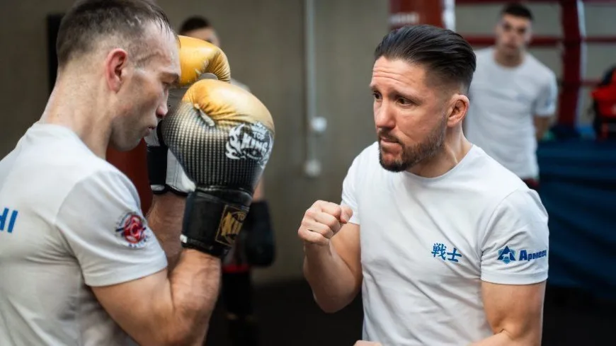
De kampioen zelfLes van Andy zelf
Geen naam op de gevel, maar de man in de zaal. Andy geeft zelf les en legt bij elke oefening uit wat het doel is en waarom je hem traint. Zo leer je in korte tijd ontzettend veel.
Kickboksschool van Andy Souwer, Den Bosch

De kampioen zelfGeen naam op de gevel, maar de man in de zaal. Andy geeft zelf les en legt bij elke oefening uit wat het doel is en waarom je hem traint. Zo leer je in korte tijd ontzettend veel.
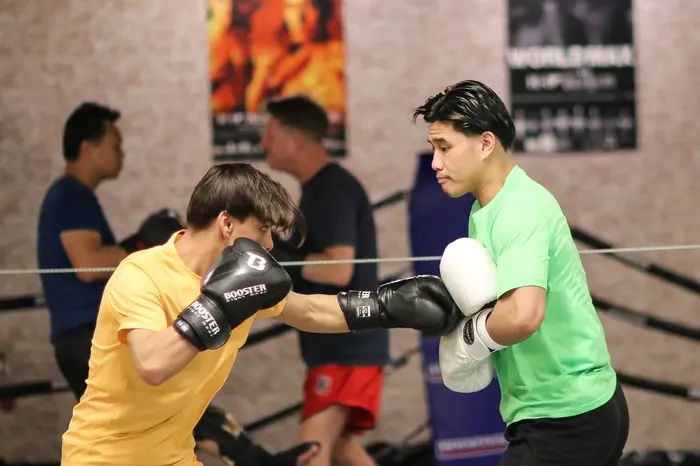
Jouw niveauBeginners en gevorderden trainen in aparte uren. Het shirtsysteem van wit tot zwart laat zien waar je staat en waar je naartoe werkt. Niemand hoeft zich groot te houden.
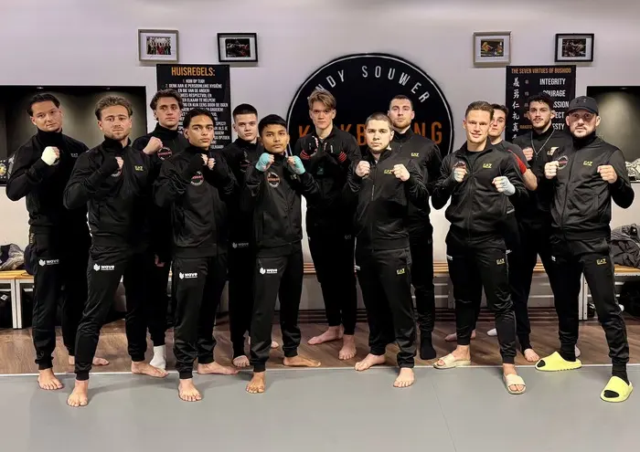
Voor iedereenKids Kata vanaf 7 jaar, jeugd van 12 tot 15, Ladies Only door vrouwen, ochtendlessen en een wedstrijdgroep. Leden blijven jaren: één zoon traint hier al zeven en een half jaar.
 Vanaf 16 jaar
Vanaf 16 jaarDe basis tot in de puntjes: stand, verdediging, stoten en trappen, en dan combinaties. Beginners en gevorderden trainen in aparte uren, zodat je nooit te makkelijk of te moeilijk zit. Via het shirtsysteem werk je stap voor stap naar een hoger niveau.
"Het moeilijkste aan kickboksen is het er makkelijk uit laten zien." Plan een proefles 12 tot en met 15 jaar
12 tot en met 15 jaarRespect, discipline en doorzettingsvermogen: drie van de zeven deugden uit het Japanse bushido. Door sport en spelplezier ontwikkelt ieder kind zich op zijn of haar eigen niveau. Ook hier beloont het shirtsysteem hard werken en inzet.
"Door plezier en discipline is de weg vlakker dan menig muur." Plan een proefles 7 tot en met 11 jaar
7 tot en met 11 jaarDe jongste groep leert de bewegingen van het kickboksen in vaste vormen (kata): balans, coördinatie en luisteren. Veel spel, veel herhaling, en de trots van een nieuw shirt als de basis erin zit.
"Klein beginnen, groot worden." Plan een proefles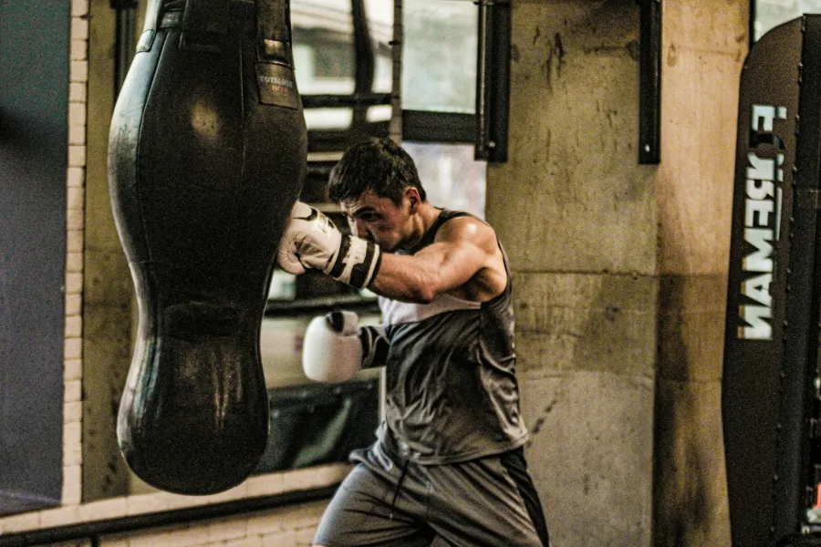
Vanaf 16 jaarDe ultieme test van skills, conditie en doorzettingsvermogen. Samen met een partner werk je op en af op de bokszak: combinaties, losse technieken en intervalmethodes. Een high-intensity uur dat je calorieën echt telt.
"Voel de sensaties in je lichaam." Plan een proefles Alleen voor vrouwen, door vrouwen
Alleen voor vrouwen, door vrouwenEen lage instap en toch uitdagend. Een vrouwelijke instructeur neemt je mee in technieken, circuits en andere trainingsvormen. Geen mannen in de zaal, wel een groep die elkaar verder helpt.
"De pijn van vandaag is de kracht van morgen." Plan een proefles Vanaf 12 jaar
Vanaf 12 jaarJezelf testen zonder lang te sparren: veel spelvormen waarin je aangeleerde technieken en tactieken verweeft met wat je trainingspartner doet. Opdrachten in flowvorm, een hersenkraker en zo nu en dan een challenge.
"Repetition is the key. Mindset matters most." Plan een proefles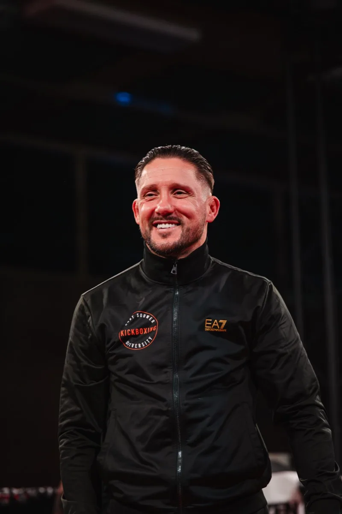
Begon op zijn zevende in Den Bosch, stond op zijn zestiende tussen de profs en won twee keer de K-1 World MAX. Sinds 2011 geeft hij zijn kennis door in zijn eigen school.
Het complete lesprogramma van Andy op je telefoon of laptop: het 4-Pillar System in korte, praktische lessen. Voor beginners en gevorderden, om thuis of in je eigen gym te trainen.
Stoten, trappen en combinaties met ritme en balans.
Lezen wat er komt en er als eerste zijn.
Het ritme van je tegenstander breken.
Het plan per ronde, en de rust om het uit te voeren.
 Online lidmaatschap
Online lidmaatschapJe abonnement verlengt automatisch tot je opzegt. Meer over het programma op de online-pagina.
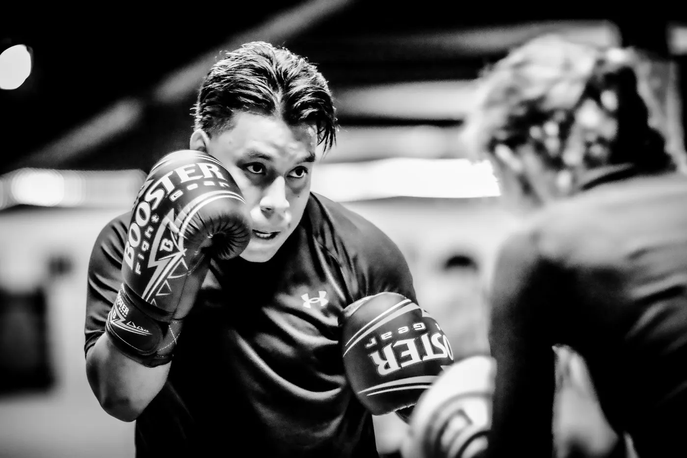
5,0 op GoogleEen hele fijne kickboksschool. Ik heb bij meerdere kickboksscholen getraind, maar bij Andy is de enige plek waar ik me 100% op mijn gemak voel. Andy en de andere trainers hebben veel kennis en denken echt met je mee. De mensen die er trainen zijn ook ontzettend fijn en behulpzaam. Er heerst geen haantjescultuur, maar juist een prettige sfeer in alle lessen. Zeker een aanrader om bij Andy te komen trainen!
Een enorme eer om met Andy te mogen trainen. Hij is een fijn persoon en een topvechter en coach. Hij deelt zijn visie op de vechtsport en benadrukt daarbij dat dit zijn eigen visie is en niet dé waarheid, wat zijn bescheidenheid laat zien. Bij iedere oefening legt hij uit wat het doel is en waarom we deze trainen. Ik heb in korte tijd ontzettend veel geleerd. De gym is ruim opgezet en goed onderhouden. Zeker een aanrader om eens een groepsles of privétraining mee te pakken!
Mijn zoon traint al 7,5 jaar bij Andy en vindt het nog steeds leuk. Andy maakt tijdens de trainingen ook regelmatig grapjes, wat het voor kinderen en inmiddels pubers extra leuk maakt. Een geweldige trainer die zorgt dat trainen leuk blijft.
De sfeer is geweldig, met wederzijds respect, veel gelach en een positieve instelling. De mensen zijn vriendelijk en behulpzaam en Andy is een geweldige persoon en trainer. Een zeer positieve en bijzondere trainer die zorgt voor een fijne omgeving. Voor mij is dit dé kickboksschool in Den Bosch en omgeving.
Een hele fijne plek om lekker te trainen, conditie op te bouwen en in goed gezelschap je eigen grenzen op te zoeken. Je kunt hier leren van ervaren trainers en iedere dag opnieuw een stap vooruitzetten in je persoonlijke ontwikkeling. Wat ook prettig is, is dat leden respect hebben voor het niveau van anderen. Daardoor is de drempel om mee te doen laag.
Een kickboksschool waar je kunt leren van één van de grootste aller tijden. Respect en veel aandacht voor techniek staan voorop. Er is een fijne groep mensen van verschillende niveaus, waarbij je op een goede manier wordt gestimuleerd om stappen te maken en te groeien. Ik ben dankbaar dat ik erbij mag horen.
Een prettige sfeer voor iedereen, van beginners tot getrainde atleten. Andy weet met al zijn kennis iedereen snel te motiveren en zorgt ervoor dat je op je eigen niveau kunt groeien. Naast het trainen wordt er ook veel gelachen. Zeker de moeite waard om eens binnen te lopen en kennis te maken.
Een masterclass voor 350 vechters, padwerk met Albert Kraus, een eerlijke podcast. Tik op een reel en kijk met geluid.
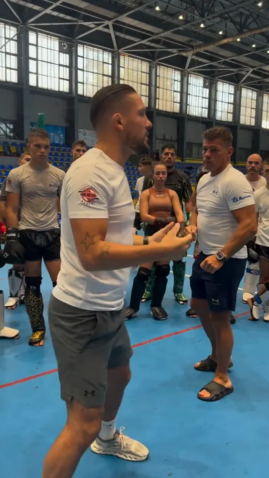
andy8souwer2official SENSHI Camp · VarnaMasterclass voor 350 vechters 30.500 weergaven Bekijk de reel: Masterclass voor 350 vechters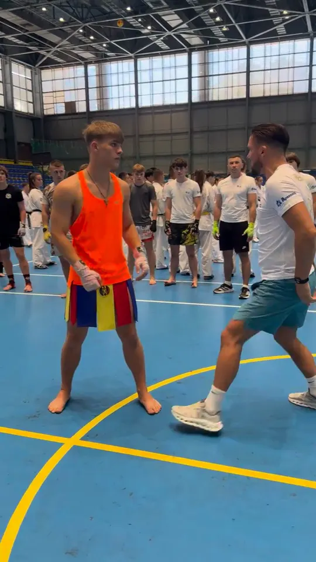
andy8souwer2official SENSHI Camp · VarnaUitleg tot in het detail 32.200 weergaven Bekijk de reel: Uitleg tot in het detail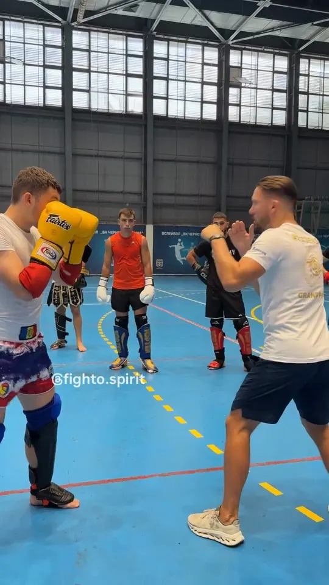
andy8souwer2official SENSHI Camp · VarnaAndy Souwer en Albert Kraus 8.271 weergaven Bekijk de reel: Andy Souwer en Albert Kraus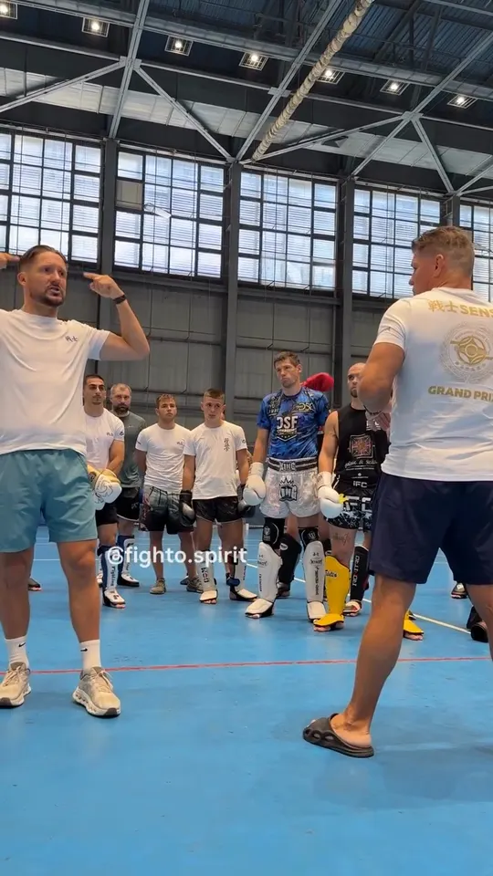
andy8souwer2official SENSHI Camp · VarnaTrainen met Andy Souwer 11.700 weergaven Bekijk de reel: Trainen met Andy Souwer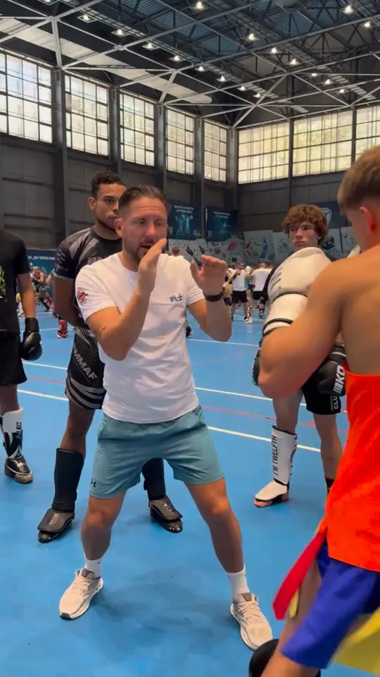
andy8souwer2official SENSHI Camp · VarnaOp de pads met Andy 8.488 weergaven Bekijk de reel: Op de pads met Andy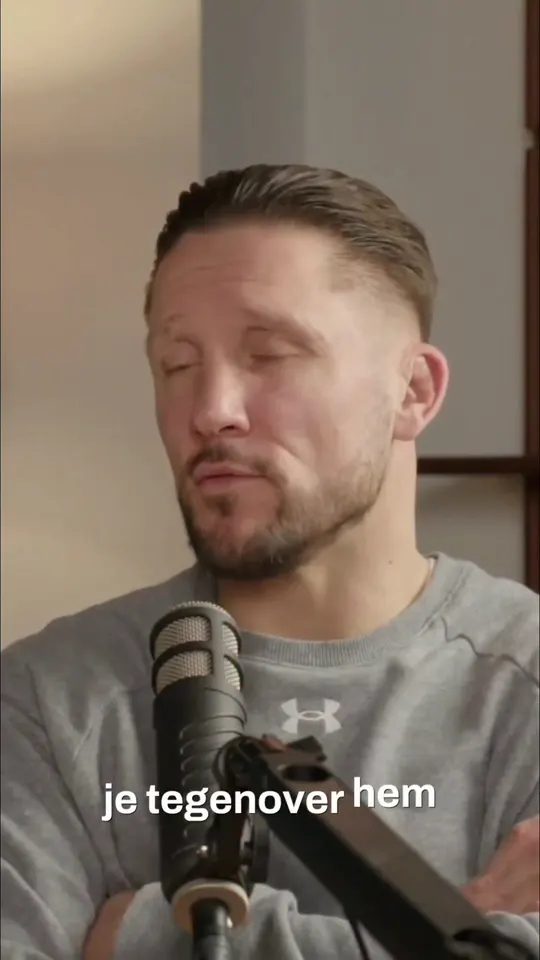
andy8souwer2official PodcastDe podcast over Albert Kraus 13.000 weergaven Bekijk de reel: De podcast over Albert KrausPer maand, per leeftijdsgroep. Met onbeperkt train je elke les op het rooster.
Geen ervaring en liever eerst privé beginnen? De Starters Course (3 personal trainings) kost 150 excl. btw. Personal training met een rittenkaart vanaf 500. Alle tarieven.
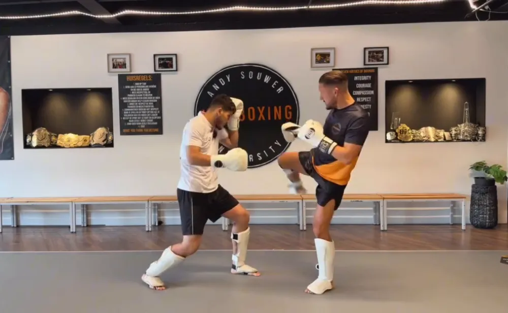
Korvetstraat 3, 5237 PS 's-Hertogenbosch (Maaspoort). Een ruime, schone zaal met ring en een lange rij bokszakken. Parkeren voor de deur.
Route in Google MapsKom een kwartier eerder, in sportkleding. Handschoenen en scheenbeschermers kun je lenen. Zeg tegen Andy dat het je eerste les is: dan sta je naast iemand die je meeneemt.
Plan je proeflesStuur een WhatsApp naar 06-55113371 of mail naar info@kickboxinguniversity.nl. Voor het rooster van vandaag: bovenaan deze pagina.
Stuur een WhatsAppKies een les en een dag, wij bevestigen per WhatsApp. Sportkleding aan, handschoenen kun je lenen.
Hoi! Wil je een proefles plannen of heb je een vraag over de lessen? Stuur ons een berichtje, we reageren zo snel mogelijk.
Chat openen